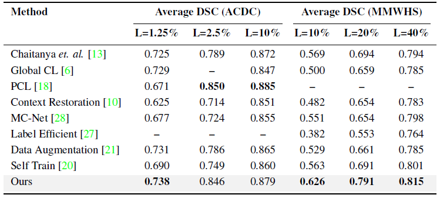

IDEAL✓: Improved DEnse locAL Contrastive Learning for Semi-Supervised Medical Image Segmentation
| Hritam Basak*1 | Soumitri Chattopadhyay*2 | Rohit Kundu*3 | Sayan Nag*4 | Rammohan Mallipeddi5 |
|
1Stony Brook University |
2Jadavpur University |
3University of California, Riverside |
4University of Toronto |
5Kyungpook National University |
|
|
|
|
|
Accepted at the 48th IEEE International Conference on Acoustics, Speech, and Signal Processing (ICASSP 2023) |
Overview

|
| An overview of the proposed IDEAL (Improved DEnse locAL Contrastive Learning for Semi-Supervised Medical Image Segmentation) framework: (a) Pre-training- xq and xk are the query and key images, E and G represent the encoder and projection head, respectively. The projection head employs a 1x1 convolution layer instead of a traditional MLP for dense feature extraction, resulting in better local clustering of features. (b) Fine-tuning- Two perturbed branches with the same input are employed. E(θ) is the shared encoder initialized similarly for both streams, D(θ1) and D(θ2) represent two different decoder architectures; p1 and p2 are the predicted output segmentation maps which are thresholded to obtain y1 and y2 respectively. y1 backpropagates through the second stream and y2 backpropagates through the first stream enforcing cross-consistency in segmentation. |
Main Results
| Results obtained by the IDEAL framework with varying amounts of labeled data on the ACDC and MMWHS datasets. ‘L’ represents the amount of labeled data used. |
|  |
| Performance Comparison (DSC scores) of the proposed IDEAL framework with SoTA methods in the literature on the ACDC and MMWHS datasets. |

|
| Visual comparison of our results with SoTA methods and ground truth, thus qualitatively validating the superiority of IDEAL in terms of segmentation performance. |
People
 Hritam Basak |
Soumitri Chattopadhyay |
Rohit Kundu |
Sayan Nag |
Rammohan Mallipeddi |
Paper
|
Hritam Basak*, Soumitri Chattopadhyay*, Rohit Kundu*, Sayan Nag*, Rammohan Mallipeddi IDEAL: Improved DEnse locAL Contrastive Learning for Semi-Supervised Medical Image Segmentation Paper [arXiv] [code] [bibtex] |